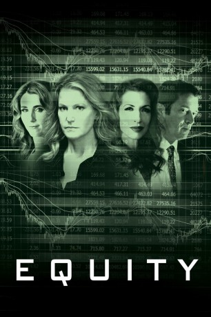
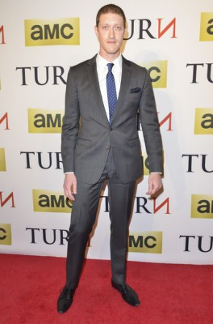

#5633 Equity - An der Wall Street sind nicht alle Spieler gleich
 
 IMDB-Wertung: 5.6 / 10
IMDB-Wertung: 5.6 / 10  Metascore: 0
Metascore: 0 
Die energische Investment-Bankerin Naomi Bishop (Anna Gunn) ist erfolgreich und hat finanziell ausgesorgt. Sie arbeitet für die weltgrößte Investment Bank und weiß, wie sie bekommt, was sie will. Im Job, wie auch im Privatleben steht sie auf der Sonnenseite. Dann allerdings verbreitet jemand aus ihrem Umfeld plötzlich Gerüchte über den anstehenden Börsengang eines der von ihr betreuten Unternehmen. Zum ersten Mal scheint es im Leben der Unternehmerin bergab zu gehen, doch aufzugeben kommt für Naomi nicht in Frage. Sie fängt an zu recherchieren und stößt auf weitverzweigte Korruptionen innerhalb des Finanzsektors. Und je mehr sie darüber herausfindet, desto mehr merkt sie, was für einem riesigen Skandal sie auf der Spur ist. Allerdings könnte dieser, wenn er an die Öffentlichkeit gelangt, auch ihr eigenes Leben ruinieren…
Jahr: 2016
Dauer: 100 Minuten
FSK:
Land: USA Studio: Sony Pictures ClassicsTonspuren: DTS - ,
Untertitel: Deutsch,
Auflösung: 1080p (1920x1040) Größe: 4218 MB
Genre: Drama
Regisseur: Meera Menon
Drehbuch: Wentworth Miller
Soundtrack:
Darsteller:
 Anna Gunn als Naomi Bishop
Anna Gunn als Naomi Bishop James Purefoy als Michael Connor
James Purefoy als Michael Connor- Sarah Megan Thomas als Erin Manning
 Alysia Reiner als Samantha Ryan
Alysia Reiner als Samantha Ryan-  Samuel Roukin als Ed
 Craig Bierko als Benji Akers
Craig Bierko als Benji Akers Nate Corddry als Cory
Nate Corddry als Cory- Nick Gehlfuss als Gabe
 Carrie Preston als Compliance Officer Abby
Carrie Preston als Compliance Officer Abby Tracie Thoms als Melanie
Tracie Thoms als Melanie Lee Tergesen als Randall
Lee Tergesen als Randall James Naughton als John
James Naughton als John- Roe Hartrampf als Teddy
 David Alan Basche als Ian
David Alan Basche als Ian Joseph Siravo als Frank
Joseph Siravo als Frank- Sophie von Haselberg als Marin
 Margaret Colin als Attorney Cahn
Margaret Colin als Attorney Cahn- Olivia Gilkison-Parrish als Sophie
- Lukas Gilkison-Parrish als William
- Meghan Rafferty als Leslie from HR
- Laura Shoop als Erin's Assistant
 Samrat Chakrabarti als Neel
Samrat Chakrabarti als Neel- Purva Bedi als Channing Trust Attorney
 Michael Izquierdo als Trader
Michael Izquierdo als Trader- Taylor C. Hays als Remson Trader
- Alexa Salamé als Young Woman
- Neil Baltus als Lawyer , uncredited
- Jeanine Bartel als Naomi's Assistant , uncredited
 Jennifer Butler als NY Hotel Guest , uncredited
Jennifer Butler als NY Hotel Guest , uncredited- Harris Doran als Shareholder , uncredited
- Jonathan Fredrick als Broker , uncredited
- Ozz Gomez als Defense Lawyer , uncredited
 Laura Hart als Office Secretary , uncredited
Laura Hart als Office Secretary , uncredited Agron Karameti als Bar Customer , uncredited
Agron Karameti als Bar Customer , uncredited Carolyn McCormick als Naomi's Doctor , uncredited
Carolyn McCormick als Naomi's Doctor , uncredited- Evette Morales als Pedestrian , uncredited
- Catherine Cobb Ryan als Ultrasound Technician , uncredited
- Gayle Samuels als Security Guard , uncredited
- Neil Samuels als Attorney , uncredited
- Adam Aseem Tiwari als Trader 2 , uncredited
- Kyle Beltran als Bill
- Peter Anske als Upset Trader
- Joy Barrett als Investor
- Kristi Molinaro als Trainer
- Rob Wiesenthal als Helicopter Lineman
- Robert Benn als Stockbroker , uncredited
 Lorenzo Beronilla als Remson Trader , uncredited
Lorenzo Beronilla als Remson Trader , uncredited- Charlene DeCicco als Club Goer , uncredited
- Russell Gibson als Chief Securities Executive , uncredited
- Shawn Gonzalez als Businessman , uncredited
Datei: X:\2016(A-F)\Equity - An der Wall Street sind nicht alle Spieler gleich (2016, FSK, 1920x1040).mkv seit 27.02.2017
Festplatte: HD 2016(A-Z)
 Es gibt insgesamt 147 Filme in der Gruppe '2016(A-F)'
Es gibt insgesamt 147 Filme in der Gruppe '2016(A-F)'